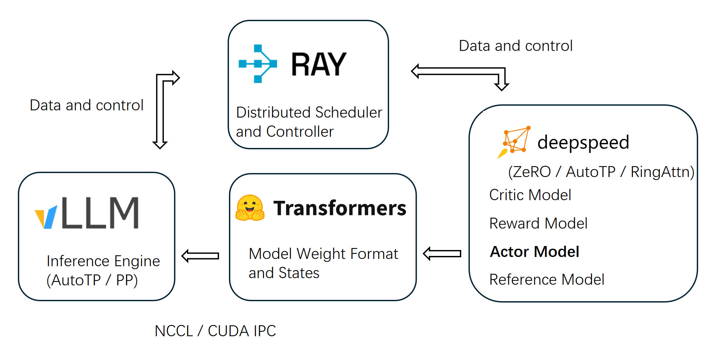

架构基础：Ray（分布式计算框架）+ vLLM（大模型推理引擎）分布式架构
OpenRLHF（开源强化学习训练框架）基于 Ray + vLLM 分布式架构，高效协调多个 GPU（图形处理器）上的组件。框架清晰分工：Ray 负责分布式调度，vLLM 负责高吞吐生成，DeepSpeed（分布式训练优化框架）负责内存高效的训练，均使用原生 HuggingFace（模型与工具平台）模型。


其重要性
RLHF（基于人类反馈的强化学习）训练约有80% 的实际耗时用于样本生成。朴素配置为生成和训练分配不同 GPU，使双方大部分时间闲置。OpenRLHF 通过两种方式避免此问题：
分布式模式：Actor（策略模型）/Reward（奖励模型）/Reference（参考模型）/Critic（价值模型）与 vLLM 引擎放在不同 GPU 上，以流水线方式运行。可扩展到70B+ 参数模型。
Hybrid Engine（混合引擎）模式（推荐用于多数工作负载）：所有模型与 vLLM 引擎同置于相同 GPU，阶段之间通过休眠模式释放显存（见 Hybrid Engine（混合引擎））。
核心基础设施组件
Ray — 分布式调度器与控制器
OpenRLHF 使用 Ray 进行分布式调度，将 Actor、Reward、Reference 和 Critic 模型分配到不同 GPU，或通过 Hybrid Engine 同置，从而支持高达70B+ 参数模型的可扩展训练。Ray placement groups（资源放置组）便于指定各模型的 GPU 资源，Ray jobs（作业提交机制）支持从集群任意节点提交训练任务。
vLLM — 高性能推理引擎
vLLM 通过 PagedAttention（分页注意力）、连续批处理、前缀缓存和 CUDA（NVIDIA 的并行计算平台） graphs（CUDA 计算图）提供高吞吐、内存高效的生成。OpenRLHF 将 vLLM 与 Auto Tensor Parallelism（自动张量并行，AutoTP） 和 Pipeline Parallelism（流水线并行，PP（流水线并行）） 集成，使单次 rollout（策略采样生成）可分片到多个 GPU，无需修改训练循环。
训练器与 vLLM 之间通过 NCCL（GPU 集合通信库）（--vllm.sync_backend nccl）同步权重，在每个训练步骤之后低延迟更新。
DeepSpeed — 内存高效训练
训练使用 DeepSpeed ZeRO-3（优化器状态、梯度与参数完全分片），在 GPU 间分片优化器状态、梯度和参数。可选功能：
deepcompile — 图编译（
--ds.deepcompile）。AutoTP — DeepSpeed 张量并行（
--ds.tensor_parallel_size）。RingAttention（环形注意力）用于长上下文（
--ds.ring_attn_size；见 Sequence Parallelism（序列并行，RingAttention））。优化器可选择 Adam（自适应矩估计优化器，默认）或 Muon（矩阵权重优化器），通过
--optim muon（单模型训练器）/--actor.optim muon（PPO（近端策略优化））设置。需要 DeepSpeed ≥ 0.18.2，且不兼容--ds.adam_offload。
因此，可直接从 HuggingFace 检查点训练大模型，无需模型转换或自定义训练框架。
Transformers（模型工具库）— 模型接口
原生集成 HuggingFace 的 Transformers，用于模型加载、状态管理和微调。通过 vision_config 字段自动识别 VLMs（Vision-Language Models，视觉语言模型），使用 AutoModelForImageTextToText 加载（见 RL（强化学习）训练指南）。
NCCL / CUDA IPC（CUDA 进程间通信）— 高速通信
GPU 间通信使用 NCCL 执行集合操作，使用 CUDA IPC 进行节点内权重传输。这使权重同步、梯度归约和 KV-cache（键值缓存）移动的成本在 70B 规模下仍然较低。
执行时的设计原则
在上述静态组件布局之上，OpenRLHF 调度各组件何时运行，以最大化 GPU 利用率。内置两种互补机制，均为正式支持的功能，可按每次运行配置：
Hybrid Engine（通过休眠模式分时共享）
不共享时，vLLM 在训练期间闲置，DeepSpeed 在生成期间闲置，浪费约一半 GPU 时间。Hybrid Engine 通过将 Actor/Critic/Reward/Reference 以及 vLLM 同置于相同 GPU，通过休眠模式分时运行来解决：
在生成阶段，vLLM 活跃，DeepSpeed 引擎休眠。
同步权重（NCCL）后，vLLM 休眠，DeepSpeed 唤醒进行训练。
双方都能在阶段之间释放内存，因此即使模型较大，也可共用一组 GPU。
启用标志：--train.colocate_all --vllm.enable_sleep --ds.enable_sleep。只要显存允许，推荐在任何集群上默认采用此配置。完整配置与调优说明见 Hybrid Engine（混合引擎）。
异步 + Partial Rollout（可中断并恢复的部分采样生成）（并发流水线）
异步模式让 rollout 与训练并发运行，而非交替执行：
--train.async_enable通过有界队列（--train.async_queue_size）重叠两个阶段。--train.partial_rollout_enable进一步减少停顿：vLLM 从不完全停止；权重同步时，它暂停在途请求，切换权重后恢复。以少量 off-policy（异策略）噪声为代价，使生成与权重广播重叠；在途样本会混用旧、新权重。
异步流水线提供最高吞吐量，与 off-policy 修正（--algo.advantage.is_correction_enable --algo.advantage.is_correction_type icepop）自然适配。它们与 vLLM 休眠模式互斥，但仍可同置 DeepSpeed 模型。见 异步训练与 Partial Rollout（可中断并恢复的部分采样生成）。
主要收益
可扩展性 — 高效训练高达 70B+ 参数的模型。
效率 — vLLM 加速生成，消除 RLHF 的主要瓶颈。
灵活性 — Hybrid Engine 共享 GPU，避免小集群资源闲置；分布式模式扩展大模型；异步加 partial rollout 在吞吐量至关重要时最大化重叠。
兼容性 — 原生集成 HuggingFace 模型，无需自定义检查点格式。
可用于生产环境 — 基于 NCCL 的权重同步、完整检查点/恢复、最佳检查点跟踪、EMA（指数移动平均）、多节点 SLURM（集群作业调度系统）与全面日志。
这些组件如何组成统一训练流水线，见 设计范式：基于 Agent（智能体）的执行。